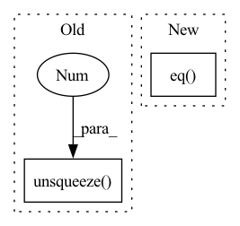

Pattern ID :3827
Before Change
return ~make_pad_mask(lengths, xs, length_dim)
def get_attn_pad_mask(lengths, xs=None, length_dim=-1):
return ~make_pad_mask(lengths, xs, length_dim).unsqueeze(-2 ) .lt(1)
def subsequent_mask(size, device="cpu", dtype=torch.bool):
ret = torch.ones(size, size, device=device, dtype=dtype)After Change
def get_attn_pad_mask(lengths, xs=None, length_dim=-1):
mask = ~make_pad_mask(lengths, length_dim)
//mask = mask.expand(-1, xs, -1)
mask = mask.unsqueeze(1).eq( 0)
return mask
def subsequent_mask(size, device="cpu", dtype=torch.bool):
ret = torch.ones(size, size, device=device, dtype=dtype)In pattern: SUPERPATTERN
Frequency: 3
Non-data size: 2
Instances Fragment ID: 14554118
Project Name: qute012/kosr
Commit Name: e19438c9d4d6bd6af0fa84e9fd93a20e2cf2f828
Time: 2021-02-03
Author: ejrwls012@gmail.com
File Name: kosr/model/mask.py
M Class Name: AnonimousClass
N Class Name: AnonimousClass
M Method Name: get_attn_pad_mask(3)
N Method Name: get_attn_pad_mask(3)
M Parent Class:
N Parent Class:
M File Name: kosr/model/mask.py
N File Name: kosr/model/mask.py
M Start Line: 36
M End Line: 36
N Start Line: 24
N End Line: 27
Before Change
dist_ap, dist_an = [], []
for i in range(n):
dist_ap.append(dist[i][pos_mask[i]].max().unsqueeze(0 ) )
dist_an.append(dist[i][neg_mask[i]].min().unsqueeze(0))
dist_ap = torch.cat(dist_ap)After Change
// hard examples mining
n, m = f.size(0), xbm_f.size(0)
identity_mat = labels.expand(m, n).t().eq( xbm_labels.expand(n, m)) .float()
dist_ap, dist_an = hard_examples_mining(dist_mat, identity_mat)
// Compute ranking hinge loss Fragment ID: 14554119
Project Name: thuml/transfer-learning-library
Commit Name: 0f8f51c4b2fac78edf87e29764e4da3deec6f65f
Time: 2021-10-14
Author: 57670068+tsingcbx99@users.noreply.github.com
File Name: common/vision/models/reid/loss.py
M Class Name: TripletLossXBM
N Class Name: TripletLossXBM
M Method Name: forward(5)
N Method Name: forward(5)
M Parent Class: nn.Module
N Parent Class: nn.Module
M File Name: common/vision/models/reid/loss.py
N File Name: common/vision/models/reid/loss.py
M Start Line: 132
M End Line: 152
N Start Line: 154
N End Line: 162
Before Change
min_values, min_idx = torch.where(other_idx, values, values.max()).min(dim=-1)[0] // (C)
min_labels = labels.gather(dim=1, index=min_idx.unsqueeze(1)).flatten() // (C)
min_labels_counts = labels.eq(min_labels.unsqueeze(1 ) ).int().sum(dim=1) // (C)
condition2 = min_labels.ge(self.n_samples - 2) // todo: Not sure: self.n_samples -> self.seed_num
idx_list = condition2.nonzero()[:self.top_n_neurons]
neuron_dict[layer] = {int(idx): int(min_labels[idx]) for idx in idx_list}After Change
vs: torch.Tensor = ps[:, self.n_samples // 5:].max(dim=1)[0] \
- ps[:, :self.n_samples // 5].min(dim=1)[0] // (C, batch_size, num_classes)
values, labels = vs.sort(dim=-1, descending=True)
condition1 = labels[:, :, 0].eq( _label) // exclude the ground-truth labels
values = torch.where(condition1, values[:, :, 1] - values[:, :, 2],
values[:, :, 0] - values[:, :, 1]) // (C, batch_size)
labels = torch.where(condition1, labels[:, :, 1], labels[:, :, 0]) // (C, batch_size) Fragment ID: 14554115
Project Name: ain-soph/trojanzoo
Commit Name: 1684c28ef38502abb83d37beb845b69007e33274
Time: 2020-07-07
Author: ain-soph@live.com
File Name: trojanzoo/defense/backdoor/abs.py
M Class Name: ABS
N Class Name: ABS
M Method Name: find_min_max(3)
N Method Name: find_min_max(3)
M Parent Class: Defense_Backdoor
N Parent Class: Defense_Backdoor
M File Name: trojanzoo/defense/backdoor/abs.py
N File Name: trojanzoo/defense/backdoor/abs.py
M Start Line: 210
M End Line: 225
N Start Line: 234
N End Line: 254